Headcount AI · Meta video ads · Round 4 v8 · storyboards for approval · 28 Nov 2026
12 films, 2 new middles. A real result every 2 seconds.
Storyboards only: nothing is rendered as video, uploaded or spent. Two middles (P: competitor ads loop with email; S: sales loop), each with 6 hooks. Every UI frame is the real Headcount Cloud v3 dashboard or a replica rebuilt from a real public page, filled with fictional brands, people and numbers. Approve, cut or rewrite any line and the rest gets built.
Why new middles
HC-O-5 holds 4 to 5 s on average; of 3-second viewers about 25% reach 15 s and 5% the end. The 58 s middle opened on a 40-agent wall, "9 departments" and setup steps, and lost people between 4 and 15 s.
v8 runs 37 to 39 s and opens straight on the job: one goal typed at 3.5 s, a real find at about 8 s (the second jolt: LIVE 74 DAYS or 48 READY), price on screen by 11 to 14 s, and a new result every 1.5 to 2.5 s after that.
Setup and bonuses move to the last 8 s, where the people still watching are buyers.
Rules on every frame
Real UI only: Headcount Cloud is the live ui.html; Meta, Telegram, Gmail, Calendar and Cashfree are replicas of their public pages. Dummy data, labelled.
Captions sit in the band both placements keep (9:16 y 1090 to 1230, 4:5 y 805 to 945); key UI above it; every text inside both safe zones.
"40 agents" everywhere. The Claude logo sits right before the word Claude. 😱 is the shock emoji. No em or en dashes. ₹ only.
No refunds, guarantees or promised results; never "free with Claude or ChatGPT"; the narrator never says "POV".
The 12 films
Tap a film for its hook options, script and timing. Picks shown.
Goal typed into Headcount Cloud: Beat my competitor's ads. Agents in order: Competitor Watch, Static Ad Factory, ROAS Autopilot, Flow Architect. Times below assume an 8-word hook line (middle starts at 3.5 s); each film's own timing is in its card. Every Headcount frame is the real v3 ui.html, only fed dummy scenario data; third-party screens are replicas rebuilt from the public pages listed under References.
Middle P voice (80 words)
Tell your forty agents: beat my competitor's ads. Competitor Watch finds a rival ad running seventy-four days. It hands the angle to Static Ad Factory: six new versions. You tap approve. ROAS Autopilot launches them. Next morning, it pauses the two losers and moves the budget to the winner. Then Flow Architect emails everyone who clicked an ad or a reel, and brings them back. Setup is three steps, about five minutes. Plus seven bonuses. Come meet your forty agents.
Mission page "Beat my competitor's ads": the planner splits it into 4 runs that pop in: competitor-watch Running, static-ad-factory, roas-autopilot, flow-architect Queued.
Motion
Run cards cascade in, 0.12 s apart; camera tilts down the list.
On-screen text
4 agents, 1 goal
Copies
Headcount Cloud v3, real ui.html (refs: hc-real-captures, hc-scenario-shots)
Transition
Tap on the competitor-watch card zooms into its run page.
Run page: Helpers it asked (1): static-ad-factory · Running · Building ad 4 of 6, plus the live step "Asked static-ad-factory: Make 6 versions of Kettle & Kin's 74-day angle" (the real ask_agent child run).
Motion
A lime hand-off beam travels from the Competitor Watch chip to the helper card; the card lights.
On-screen text
ask_agent hand-off
Copies
Headcount Cloud v3, real ui.html (refs: hc-real-captures, hc-scenario-shots)
Transition
The helper card opens into the factory's output.
Sound
Whoosh-short on the beam; soft chime when the card lights.
Telegram on the phone: Headcount AI bot, ROAS Autopilot: 6 new ads are ready (from Static Ad Factory). Launch all 6 at ₹3,000 a day? [Approve] [Edit] [Reject]. A thumb taps Approve.
“Then Flow Architect emails everyone who clicked an ad or a reel,”
On screen
Headcount Flows page "Ad clickers to buyers": Sending email 2 of 3 to 412 people; tiles Clicked an ad or a reel 1,240, Gave an email 386, Emailed 386, Opened 171, Came back 38.
Motion
Tiles count up left to right; push on the funnel.
On-screen text
Flow Architect · one of your 40
Copies
Headcount Cloud v3, real ui.html (refs: hc-real-captures, hc-scenario-shots)
Transition
One email flies out of the tiles into a phone inbox.
End card: Headcount AI lockup, 40 AI marketing agents. One farm. Button Meet your 40 agents →, ₹2,999 once · +7 bonuses, ecomagents.ai/headcount.
Motion
Button pulses once and is tapped on "meet"; hold 1.3 s after the last word.
On-screen text
Meet your 40 agents → · ₹2,999 once · +7 bonuses
Copies
Our own HC-O-5 film close (refs: hco5-close)
Transition
End.
Sound
The music's real final hit under the tap.
Middle S · sales loop
Goal typed into Headcount Cloud: Get me 10 sales calls this week. Agents in order: Signal Prospector, Outbound Operator, AI Sales Closer, Flow Architect, Clip Repurposer. Times below assume an 8-word hook line (middle starts at 3.5 s); each film's own timing is in its card. Every Headcount frame is the real v3 ui.html, only fed dummy scenario data; third-party screens are replicas rebuilt from the public pages listed under References.
Middle S voice (79 words)
Tell your forty agents: ten sales calls this week. Signal Prospector finds forty-eight buyers who are ready now. Outbound Operator writes every email and follow-up. You approve the batch. Replies come in. AI Sales Closer answers with your booking link. Your calendar fills up. Then it sends the payment link. Paid. Flow Architect nurtures the rest, and your viral clips feed the same funnel. Setup is three steps, about five minutes. Plus seven bonuses. Come meet your forty agents.
S-013.5 to 5.2 s
“Tell your forty agents:”
On screen
Headcount Cloud Overview. The goal types itself in Orchestrate: Get me 10 sales calls this week. Thumb taps Start.
Motion
Match cut from the hook; slow push on the box.
On-screen text
Caption only; planner chip
Copies
Headcount Cloud v3, real ui.html (refs: hc-real-captures, hc-scenario-shots)
“Signal Prospector finds forty-eight buyers who are ready now.”
On screen
Flows page "Leads to buyers": Found counter slams 0 to 48; rows with WHY NOW: Hiring a growth marketer this week, Raised a seed round 12 days ago, Asked for agency alternatives on LinkedIn.
Motion
Counter slam with a 2-frame shake on "forty-eight"; rows slide in; the first why-now lights.
On-screen text
48 READY · buyers with a why-now
Copies
Headcount Cloud v3, real ui.html (refs: hc-real-captures, hc-scenario-shots)
“Outbound Operator writes every email and follow-up.”
On screen
Batch card "Approve 20 first emails" (Leads to buyers, outbound-operator): Nina Kapoor, Marco Silva... one opens to show the first email and 2 follow-ups. The price sticker lands.
Motion
Card rises; one row expands (Read and edit), push on the email.
On-screen text
Outbound Operator · one of your 40 · ₹2,999 once · all 40 agents · 7 bonuses (sticker, stays to the end)
Copies
Headcount Cloud v3, real ui.html (refs: hc-real-captures, hc-scenario-shots)
Instagram Reel by Clip Repurposer: "Pet cam caught my laptop doing my sales team's job", 182K plays, link to the booking page; note: Reel to booking page to +12 leads.
Motion
Reel plays 1 s, the link sticker pulses, a lead card flies out into the Found counter (48 to 60).
On-screen text
Reel → booking page → +12 leads
Copies
Instagram Reels layout, our own generated clip (refs: reel-still)
Transition
Cut to the 40-agent wall.
Sound
Swipe; tick on the counter.
C-0130.2 to 33.1 s
“Setup is three steps, about five minutes.”
On screen
The 40-agent wall: every card flips to RUNNING in a ripple; a card lands on top: Setup: 3 steps, about 5 minutes.
Motion
Ripple flip left to right, 0.04 s stagger; the setup card drops in with a soft overshoot and holds 1.5 s.
The 7 real bonus mockups deal out big (HC-O-5 bonus beat), WORTH ₹10,000+ and FREE stamp.
Motion
Deal-out 0.12 s apart, slight 3D fan; stamp on "seven".
On-screen text
+7 BONUSES · WORTH ₹10,000+ · FREE
Copies
Our own HC-O-5 film close (refs: hco5-close)
Transition
Stack collapses into the end-card button.
Sound
Card deals at -22 dB; stamp thud.
C-0334.4 to 37.8 s
“Come meet your forty agents.”
On screen
End card: Headcount AI lockup, 40 AI marketing agents. One farm. Button Meet your 40 agents →, ₹2,999 once · +7 bonuses, ecomagents.ai/headcount.
Motion
Button pulses once and is tapped on "meet"; hold 1.3 s after the last word.
On-screen text
Meet your 40 agents → · ₹2,999 once · +7 bonuses
Copies
Our own HC-O-5 film close (refs: hco5-close)
Transition
End.
Sound
The music's real final hit under the tap.
Safe zones: one 9:16 master, a 4:5 crop
Each film renders as a 9:16 master and centre-crops to 4:5 (y 285 to 1635), per SAFE-ZONES.md. Red: Reels and Stories cover it. Cyan: the 9:16 text zone. Yellow: the 4:5 crop. Lime: the caption band.
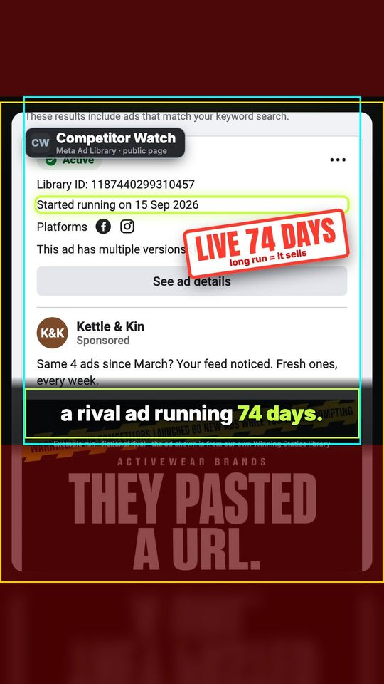
P-04, 9:16 check
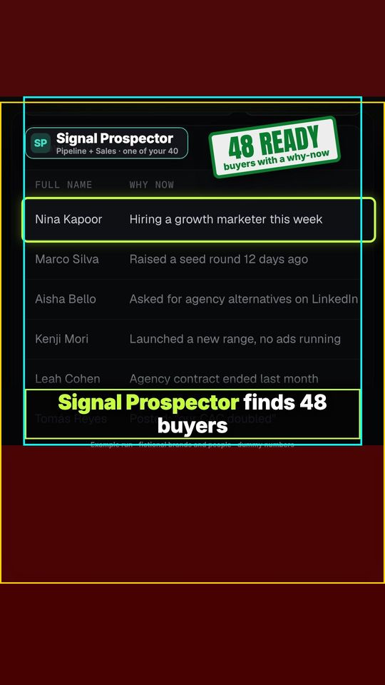
S-03, 9:16 check
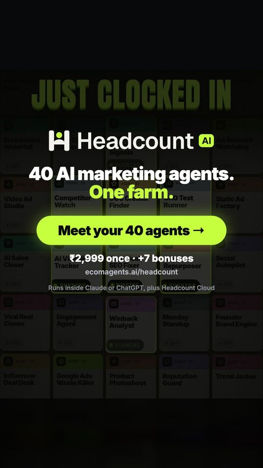
End card, 9:16
Films and hooks
Each film: the pick at 4:5 and 9:16, every option with its source and licence, the viral reference it borrows from (link and views only), the full script and how the hook joins the middle. "[group] watching Claude" and the streamer use the owner-approved Seedance recreations with an emoji over every face.
P1 · middle P · group watching ai job
Marketing agencies watching Claude do their entire job 💀
37.6 s88 words of voice4:5 + 9:16pick: option 1 (recreation)
Why this hook: The live X template (8 posts in 6 weeks, best 725k views) on the iconic suits-on-a-couch look the owner asked for; the emoji meme edit reads as a post, not an ad.
4:5 feed9:16 reels and stories
Voice, hook line (never says "POV")
“Marketing agencies, watching Claude do their entire job.”
How the hook joins the middle
The meme band holds; the couch clip pushes in on what they are staring at, and the clip window becomes the Headcount Overview on the beat drop. The band slides up and away.
Time
What
0.0 to 3.5 s
Hook: Marketing agencies, watching Claude do their entire job.
3.5 s
Join into middle P (The meme band holds; the couch clip pushes in on what they are staring at, and the clip wi…)
8.1 s
Second jolt (74 DAYS stamp)
14.0 s
Price sticker on: ₹2,999 once
34.2 to 37.6 s
End card: Meet your 40 agents
Motion of the pick (meme strip 0.5 to 4.5 s)
All hook options (4): text sits on black or in a zone clear of every face
Pick · Option 1 · recreation Two men in dark suits on a tufted leather couch in a wood-panelled office at night; one ends with both hands over his face (from ~3.3 s), the other tips his head back. Em Seedance 2.5 recreation (owner-approved), round4/hooks/v8-recreations/couch.mp4 · Our own generated clipOption 2 · recreation Man in a tan zip jacket and khakis standing in a red-rock desert, buckles and sinks toward his knees from ~2.5 s, head bowed by 3.5 s. Emoji: cry Seedance 2.5 recreation (owner-approved), round4/hooks/v8-recreations/desert2.mp4 · Our own generated clipOption 3 · generated · score 9 Five small-agency staff frozen around ONE open laptop on a meeting table: Indian man gripping his head, Nigerian woman with braids covering her mouth, grey-haired white w Generated still: OpenAI gpt-image-2 via treg via treg, $0.05 · Generated imageOption 4 · generated · score 8 Three men in plain dark suits slumped side by side on a grey couch in a small agency office (one head back staring at the ceiling, one rubbing his forehead, one frozen); Generated still: OpenAI gpt-image-2 via treg via treg, $0.05 · Generated image
Reference format (described in words; no frames taken from it)
[Group] watching AI do their entire job (despair-reaction meme) · trend score 9
Full script, one narrator, about 2.5 words a second
Marketing agencies, watching Claude do their entire job. Tell your forty agents: beat my competitor's ads. Competitor Watch finds a rival ad running seventy-four days. It hands the angle to Static Ad Factory: six new versions. You tap approve. ROAS Autopilot launches them. Next morning, it pauses the two losers and moves the budget to the winner. Then Flow Architect emails everyone who clicked an ad or a reel, and brings them back. Setup is three steps, about five minutes. Plus seven bonuses. Come meet your forty agents.
P2 · middle P · streamer facecam meltdown
Claude can do WHAT now??? 😱
37.6 s86 words of voice4:5 + 9:16pick: option 1 (recreation)
Why this hook: Facecam over our own screen is a native proof device: the scream sells the emotion, the lower half already shows the product (a Madgicx AI ad in this layout has run 155 days).
4:5 feed9:16 reels and stories
Voice, hook line (never says "POV")
“Wait. Claude can do what now?”
How the hook joins the middle
The facecam scream holds; the lower screen (Claude) grows to fill the frame and resolves into the Headcount Overview; the chat overlay slides out right.
Time
What
0.0 to 3.5 s
Hook: Wait. Claude can do what now?
3.5 s
Join into middle P (The facecam scream holds; the lower screen (Claude) grows to fill the frame and resolves i…)
8.1 s
Second jolt (74 DAYS stamp)
14.0 s
Price sticker on: ₹2,999 once
34.2 to 37.6 s
End card: Meet your 40 agents
Motion of the pick (meme strip 0.5 to 4.5 s)
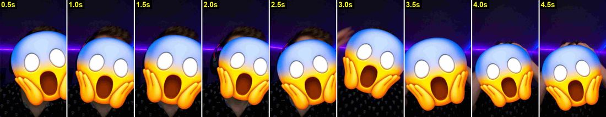
All hook options (4): text sits on black or in a zone clear of every face
Pick · Option 1 · recreation Streamer in a headset in a purple-LED room: wide-eyed stare, then hands on head and a full scream from ~3.2 s. Emoji: scream Seedance 2.5 recreation (owner-approved), round4/hooks/v8-recreations/streamer2.mp4 · Our own generated clip
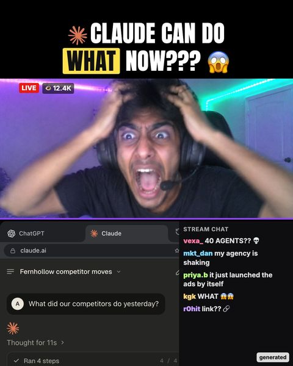
Option 2 · generated · score 9 Young South Asian man in a black gaming chair, headset with boom mic, purple and teal RGB strips behind, SCREAMING with both hands gripping his hair, leaning into the web Generated still: OpenAI gpt-image-2 via treg via treg, $0.05 · Generated image
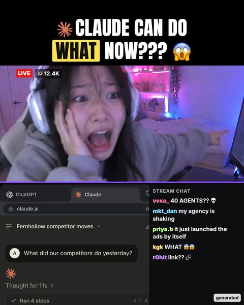
Option 3 · generated · score 9 Young East Asian woman in an oversized grey hoodie and white headset, pink and blue RGB bedroom setup, face close to the webcam, screaming with one hand on her cheek and Generated still: OpenAI gpt-image-2 via treg via treg, $0.05 · Generated image
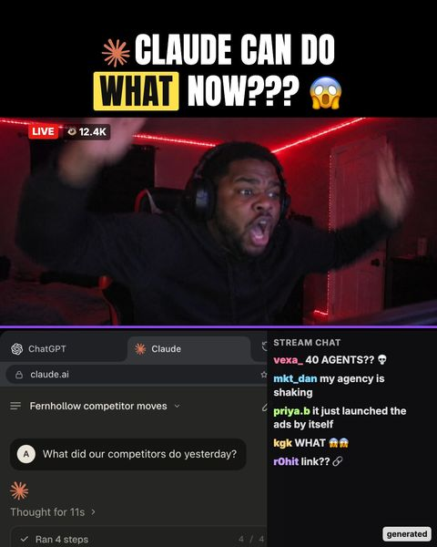
Option 4 · generated · score 8 Stocky Black man in his late 20s, hoodie and headset, dark room with red RGB strips, half jumping out of his gaming chair with both arms thrown up, shouting at the monito Generated still: OpenAI gpt-image-2 via treg via treg, $0.05 · Generated image
Reference format (described in words; no frames taken from it)
Streamer facecam meltdown (screaming at the monitor) · trend score 8
www.instagram.com/reel/Df_YsxsJK7v/: 4024957 views, 2026-11-21. On screen: N3on was SHOOK after seeing AN INFLUENCER got ATE by a PYTHON IN GTA 6
Full script, one narrator, about 2.5 words a second
Wait. Claude can do what now? Tell your forty agents: beat my competitor's ads. Competitor Watch finds a rival ad running seventy-four days. It hands the angle to Static Ad Factory: six new versions. You tap approve. ROAS Autopilot launches them. Next morning, it pauses the two losers and moves the budget to the winner. Then Flow Architect emails everyone who clicked an ad or a reel, and brings them back. Setup is three steps, about five minutes. Plus seven bonuses. Come meet your forty agents.
P3 · middle P · lofi text over face reaction
Skip this if you're happy paying ₹10 lakh a month for marketing
37.6 s88 words of voice4:5 + 9:16pick: option 1 (generated)
Why this hook: The one money-line test you OKd: a shop-owner to camera with a smug "you sure?" finger, text in the clear top zone like a creator post.
4:5 feed
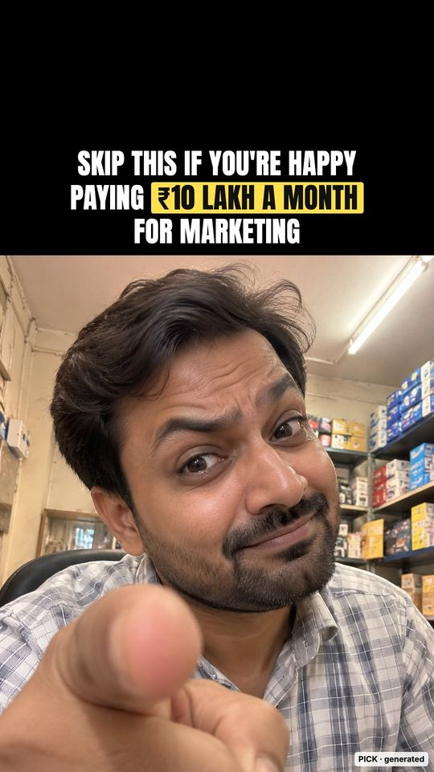
9:16 reels and stories
Voice, hook line (never says "POV")
“Still paying ten lakh a month for marketing?”
How the hook joins the middle
His pointing finger comes at the lens; whip into the Orchestrate box so his point lands as the tap on Start.
Time
What
0.0 to 3.5 s
Hook: Still paying ten lakh a month for marketing?
3.5 s
Join into middle P (His pointing finger comes at the lens; whip into the Orchestrate box so his point lands as…)
8.1 s
Second jolt (74 DAYS stamp)
14.0 s
Price sticker on: ₹2,999 once
34.2 to 37.6 s
End card: Meet your 40 agents
All hook options (4): text sits on black or in a zone clear of every face
Pick · Option 1 · generated · score 9 Indian man in his mid 30s, small-shop owner in a checked shirt, front-camera selfie in a cramped stockroom office, leaning into the lens with one eyebrow up and a smug 'y Generated still: OpenAI gpt-image-2 via treg via treg, $0.05 · Generated image
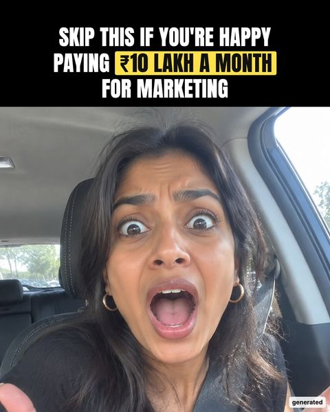
Option 2 · generated · score 8 South Asian woman in her late 20s in the driver seat of a parked car, seatbelt on, selfie: mouth wide open, eyebrows shot up, both palms up in a 'WHAT?' gesture. Generated still: OpenAI gpt-image-2 via treg via treg, $0.05 · Generated imageOption 3 · stock · score 7 Young Southeast Asian man in a white hoodie in a park: deadpan stare, then at about 2.2 s points his finger straight into the lens and holds it. pexels.com/video/a-man-pointing-at-something-in-the-distance · Pexels License
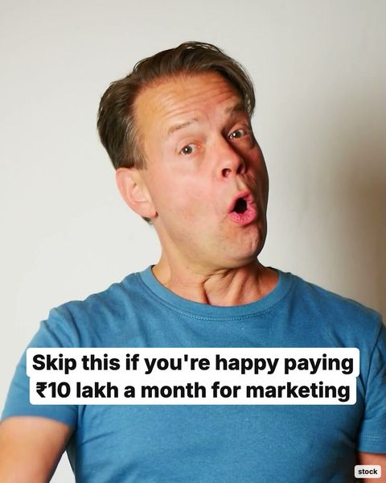
Option 4 · stock · score 5 White man in his 40s in a blue t-shirt, mouth open, throws a flat palm at the lens ('wait, stop') and holds it. Vertical 1080x1920, light backdrop. pexels.com/video/a-man-in-a-blue-shirt-is-making-a-gesture-1 · Pexels License
Reference format (described in words; no frames taken from it)
Full script, one narrator, about 2.5 words a second
Still paying ten lakh a month for marketing? Tell your forty agents: beat my competitor's ads. Competitor Watch finds a rival ad running seventy-four days. It hands the angle to Static Ad Factory: six new versions. You tap approve. ROAS Autopilot launches them. Next morning, it pauses the two losers and moves the budget to the winner. Then Flow Architect emails everyone who clicked an ad or a reel, and brings them back. Setup is three steps, about five minutes. Plus seven bonuses. Come meet your forty agents.
P4 · middle P · lofi text over face reaction
When you find out Claude can run 40 marketers 😱
37.9 s89 words of voice4:5 + 9:16pick: option 1 (stock)
Why this hook: The control: HC-O-5's proven line and layout on a new, louder face, so this film measures the new middle against the old one.
4:5 feed9:16 reels and stories
Voice, hook line (never says "POV")
“When you find out Claude can run forty marketers.”
How the hook joins the middle
As in HC-O-5: he screams at his phone; push into the phone screen, which is the Headcount Overview, then out to full frame.
Time
What
0.0 to 3.8 s
Hook: When you find out Claude can run forty marketers.
3.8 s
Join into middle P (As in HC-O-5: he screams at his phone; push into the phone screen, which is the Headcount …)
8.4 s
Second jolt (74 DAYS stamp)
14.3 s
Price sticker on: ₹2,999 once
34.5 to 37.9 s
End card: Meet your 40 agents
Motion of the pick (a / b / c frames)
All hook options (4): text sits on black or in a zone clear of every face
Pick · Option 1 · stock · score 8 Red-haired white man in a pink sweatshirt on a blue backdrop: screams and lunges toward the lens until his face fills the frame (2.3-5.0 s). pexels.com/video/a-close-up-of-a-man-shouting-8724359/ · Pexels LicenseOption 2 · stock · score 8 White man in his 30s with glasses and a black over-ear headset, both hands clamped on his head, screaming in frustration from frame 1; bright office window behind (not an pexels.com/video/close-up-video-of-a-man-shouting-6290484/ · Pexels LicenseOption 3 · generated · score 9 Filipino man in his mid 30s in a faded t-shirt in his home kitchen (rice cooker behind), phone in one hand, other hand clamped on his head, screaming at the phone and lea Generated still: OpenAI gpt-image-2 via treg via treg, $0.05 · Generated image
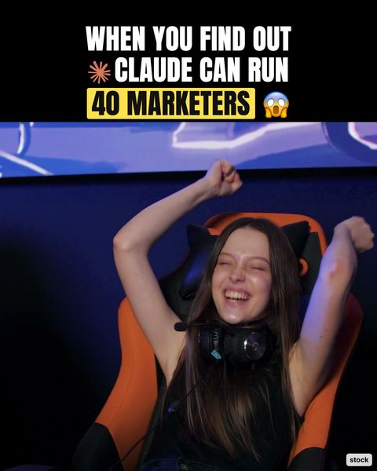
Option 4 · stock · score 7 Young woman with long dark hair in a gaming chair in a blue and red neon gaming room, headset round her neck; plays, then throws both arms up and screams/cheers from abou pexels.com/video/a-young-woman-cheering-while-playing-a-comp · Pexels License
Reference format (described in words; no frames taken from it)
Full script, one narrator, about 2.5 words a second
When you find out Claude can run forty marketers. Tell your forty agents: beat my competitor's ads. Competitor Watch finds a rival ad running seventy-four days. It hands the angle to Static Ad Factory: six new versions. You tap approve. ROAS Autopilot launches them. Next morning, it pauses the two losers and moves the budget to the winner. Then Flow Architect emails everyone who clicked an ad or a reel, and brings them back. Setup is three steps, about five minutes. Plus seven bonuses. Come meet your forty agents.
P5 · middle P · creator ai team reveal
Claude just built me a full marketing team 😱
37.6 s88 words of voice4:5 + 9:16pick: option 1 (generated)
Why this hook: Same claim as the product and already winning organically (5.4M views on 24 Nov); a selfie mid-"WHAT" then straight into the screen proof.
4:5 feed9:16 reels and stories
Voice, hook line (never says "POV")
“Claude just built me a full marketing team.”
How the hook joins the middle
Selfie creator flips the phone round (screen-flip transition); the screen is the Headcount Overview being typed into.
Time
What
0.0 to 3.5 s
Hook: Claude just built me a full marketing team.
3.5 s
Join into middle P (Selfie creator flips the phone round (screen-flip transition); the screen is the Headcount…)
8.1 s
Second jolt (74 DAYS stamp)
14.0 s
Price sticker on: ₹2,999 once
34.2 to 37.6 s
End card: Meet your 40 agents
All hook options (4): text sits on black or in a zone clear of every face
Pick · Option 1 · generated · score 9 Young Black man in his mid 20s with short twists, grey crewneck, arm's-length selfie in a cluttered home office (lamp, laptop, shelf), mouth wide open mid-shout 'WHAT', o Generated still: OpenAI gpt-image-2 via treg via treg, $0.05 · Generated image
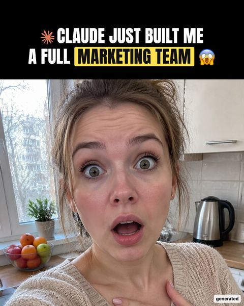
Option 2 · generated · score 8 Eastern European woman in her 20s with a messy light-brown bun and oatmeal sweater, selfie in a bright small kitchen, eyes huge, eyebrows up, mouth open mid-'WHAT', hand Generated still: OpenAI gpt-image-2 via treg via treg, $0.05 · Generated imageOption 3 · stock · score 8 Young Black woman with big curly hair, hands cupped around her mouth, shouting 'WOW/WHAT' straight down the lens, eyebrows up, for the whole clip; plain grey backdrop. pexels.com/video/young-beautiful-woman-surprised-and-say-wow · Pexels License
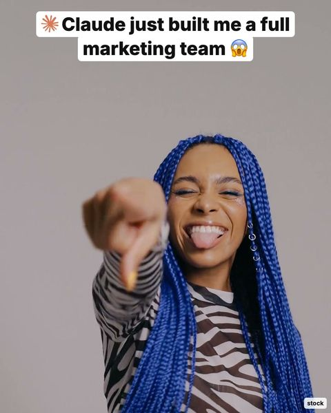
Option 4 · stock · score 6 Black woman with long royal-blue braids, zebra crop top, points at the lens and laughs, leans closer around 4 s. Vertical 1080x1920, grey studio backdrop. pexels.com/video/a-woman-finger-pointing-8628072/ · Pexels License
Reference format (described in words; no frames taken from it)
Creator reveal: 'Claude just built me a full marketing team' · trend score 9
Full script, one narrator, about 2.5 words a second
Claude just built me a full marketing team. Tell your forty agents: beat my competitor's ads. Competitor Watch finds a rival ad running seventy-four days. It hands the angle to Static Ad Factory: six new versions. You tap approve. ROAS Autopilot launches them. Next morning, it pauses the two losers and moves the budget to the winner. Then Flow Architect emails everyone who clicked an ad or a reel, and brings them back. Setup is three steps, about five minutes. Plus seven bonuses. Come meet your forty agents.
P6 · middle P · boss walks by unannounced
When the boss walks by and only the laptop is working 💀
37.7 s88 words of voice4:5 + 9:16pick: option 1 (generated)
Why this hook: A live office trend (12M views) with our twist built in: the sleeping employee and the busy laptop in one frame, then cut to what the laptop is doing.
4:5 feed
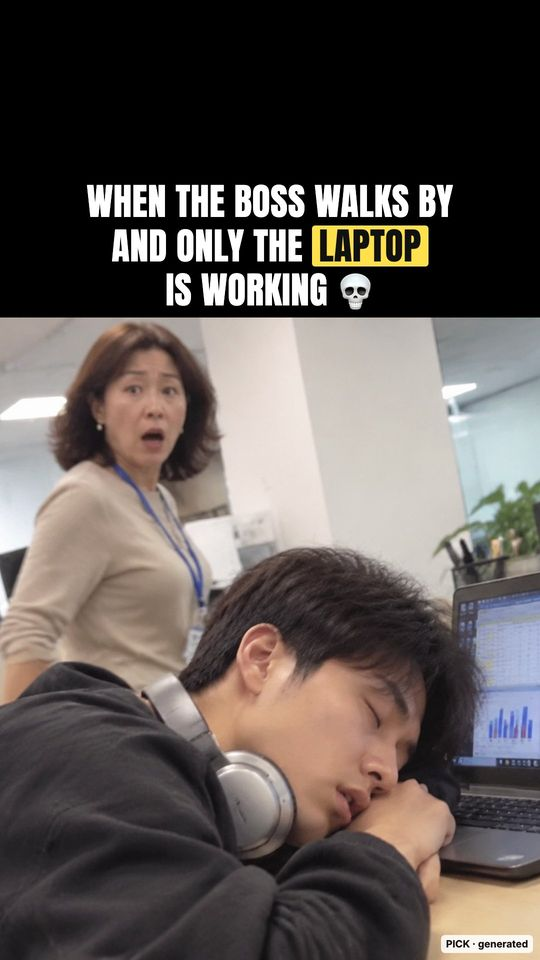
9:16 reels and stories
Voice, hook line (never says "POV")
“Boss walked in. Only the laptop was working.”
How the hook joins the middle
The boss's double take; the camera whips to the busy laptop and pushes into its screen, which is the Overview.
Time
What
0.0 to 3.6 s
Hook: Boss walked in. Only the laptop was working.
3.6 s
Join into middle P (The boss's double take; the camera whips to the busy laptop and pushes into its screen, wh…)
8.2 s
Second jolt (74 DAYS stamp)
14.1 s
Price sticker on: ₹2,999 once
34.3 to 37.7 s
End card: Meet your 40 agents
All hook options (4): text sits on black or in a zone clear of every face
Pick · Option 1 · generated · score 9 Young East Asian employee asleep on his desk with headphones round his neck next to a laptop busy with charts, while his manager (East Asian woman in her 40s with a lanya Generated still: OpenAI gpt-image-2 via treg via treg, $0.05 · Generated image
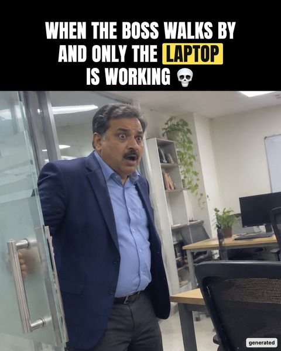
Option 2 · generated · score 9 Middle-aged Indian boss in a navy blazer stops dead in the glass doorway of a tiny startup office, eyebrows up, mouth open; every desk is empty except one open laptop bus Generated still: OpenAI gpt-image-2 via treg via treg, $0.05 · Generated image
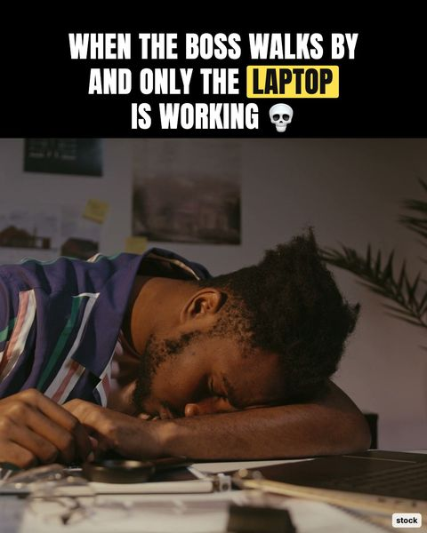
Option 3 · stock · score 7 Young Black man in a striped shirt asleep with his head on his arm on a desk, open laptop at the right edge, warm evening light. pexels.com/video/a-man-sleeping-on-his-office-desk-then-waki · Pexels LicenseOption 4 · stock · score 6 Woman in a light-blue shirt typing at a white office desk; a man in a black suit walks in from the right (0.8-2.0 s) and leans over her shoulder with papers. mixkit.co/free-stock-video/woman-fired-by-her-boss-at-work-4 · Mixkit Stock Video Free License
Reference format (described in words; no frames taken from it)
'When the boss walks by unannounced' office trend · trend score 7
Full script, one narrator, about 2.5 words a second
Boss walked in. Only the laptop was working. Tell your forty agents: beat my competitor's ads. Competitor Watch finds a rival ad running seventy-four days. It hands the angle to Static Ad Factory: six new versions. You tap approve. ROAS Autopilot launches them. Next morning, it pauses the two losers and moves the budget to the winner. Then Flow Architect emails everyone who clicked an ad or a reel, and brings them back. Setup is three steps, about five minutes. Plus seven bonuses. Come meet your forty agents.
S1 · middle S · lofi text over face reaction
Wait… Claude can run my whole sales team now? 😱
38.3 s88 words of voice4:5 + 9:16pick: option 1 (stock)
Why this hook: The HC-O-5 meme layout with the biggest real scream in stock (hands thrown wide, leaning into the lens) and a sales nerve.
4:5 feed9:16 reels and stories
Voice, hook line (never says "POV")
“Wait. Claude can run my whole sales team now?”
How the hook joins the middle
Her scream freezes for 2 frames; the meme window slides up and the dashboard is underneath.
Time
What
0.0 to 4.0 s
Hook: Wait. Claude can run my whole sales team now?
4.0 s
Join into middle S (Her scream freezes for 2 frames; the meme window slides up and the dashboard is underneath…)
7.7 s
Second jolt (48 READY slam)
11.6 s
Price sticker on: ₹2,999 once
34.9 to 38.3 s
End card: Meet your 40 agents
Motion of the pick (a / b / c frames)
All hook options (4): text sits on black or in a zone clear of every face
Pick · Option 1 · stock · score 9 Woman with long dark curly hair in an orange top screaming at the lens: fists up, then from about 2.8 s both hands spread wide by her face as she leans into the camera, m pexels.com/video/close-up-video-of-a-woman-shouting-8626652/ · Pexels License
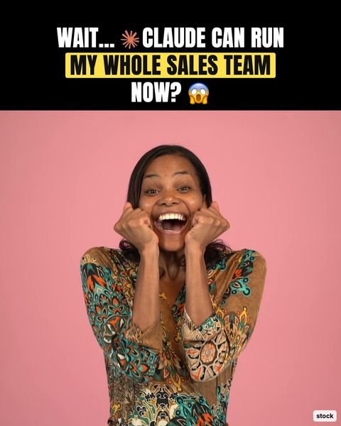
Option 2 · stock · score 8 Black woman in a patterned blouse on a pink backdrop, both hands on her cheeks, screaming with excitement from 0.8 s and holding it. pexels.com/video/an-excited-woman-screaming-4586619/ · Pexels License
Full script, one narrator, about 2.5 words a second
Wait. Claude can run my whole sales team now? Tell your forty agents: ten sales calls this week. Signal Prospector finds forty-eight buyers who are ready now. Outbound Operator writes every email and follow-up. You approve the batch. Replies come in. AI Sales Closer answers with your booking link. Your calendar fills up. Then it sends the payment link. Paid. Flow Architect nurtures the rest, and your viral clips feed the same funnel. Setup is three steps, about five minutes. Plus seven bonuses. Come meet your forty agents.
S2 · middle S · lofi text over face reaction
Me finding out my AI agent booked 3 sales calls while I was in bed 😱
38.1 s88 words of voice4:5 + 9:16pick: option 1 (generated)
Why this hook: The "me finding out" meme exactly as it trends (phone glow, bolt upright, hand over mouth), and the line is our sales result.
4:5 feed9:16 reels and stories
Voice, hook line (never says "POV")
“My AI agent booked three calls while I slept.”
How the hook joins the middle
Push into the glowing phone in her hand: the screen is Headcount Cloud's phone layout, exactly what the middle frames show.
Time
What
0.0 to 3.8 s
Hook: My AI agent booked three calls while I slept.
3.8 s
Join into middle S (Push into the glowing phone in her hand: the screen is Headcount Cloud's phone layout, exa…)
7.5 s
Second jolt (48 READY slam)
11.4 s
Price sticker on: ₹2,999 once
34.7 to 38.1 s
End card: Meet your 40 agents
All hook options (5): text sits on black or in a zone clear of every face
Pick · Option 1 · generated · score 9 Young Black woman in a satin bonnet sitting bolt upright in a pitch-dark bed, phone glow lighting her face from below, other hand slapped over her open mouth, eyes huge. Generated still: OpenAI gpt-image-2 via treg via treg, $0.05 · Generated image
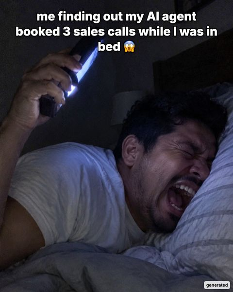
Option 2 · generated · score 8 Latino man in his 30s lying on his side screaming into the pillow, eyes shut, holding his glowing phone up above him. Generated still: OpenAI gpt-image-2 via treg via treg, $0.05 · Generated imageOption 3 · generated · score 8 Indian woman in her 20s under a blanket pulled over her head like a tent, phone light on her face, jaw dropped, hand clutching her hair. Generated still: OpenAI gpt-image-2 via treg via treg, $0.05 · Generated imageOption 4 · generated · score 8 White man in his late 20s with messy hair sitting upright in a dark bedroom, both hands on his head, silent scream, his phone lying face-up and glowing on the duvet. Generated still: OpenAI gpt-image-2 via treg via treg, $0.05 · Generated imageOption 5 · generated · score 7 East Asian man in his 30s in pyjamas propped on one elbow in bed, phone held close, eyebrows shot up and mouth hanging open. Generated still: OpenAI gpt-image-2 via treg via treg, $0.05 · Generated image
Reference format (described in words; no frames taken from it)
Full script, one narrator, about 2.5 words a second
My AI agent booked three calls while I slept. Tell your forty agents: ten sales calls this week. Signal Prospector finds forty-eight buyers who are ready now. Outbound Operator writes every email and follow-up. You approve the batch. Replies come in. AI Sales Closer answers with your booking link. Your calendar fills up. Then it sends the payment link. Paid. Flow Architect nurtures the rest, and your viral clips feed the same funnel. Setup is three steps, about five minutes. Plus seven bonuses. Come meet your forty agents.
S3 · middle S · family ai reaction
I showed my dad Claude running his sales team 😱
38.1 s88 words of voice4:5 + 9:16pick: option 1 (generated)
Why this hook: My S3 pick (proposed: parent reaction vs boss walks by). Parents are the most trusted real-reaction faces, and an Indian shop-owner dad is our buyer. Boss walks by moved to P6.
4:5 feed9:16 reels and stories
Voice, hook line (never says "POV")
“I showed my dad Claude running his sales team.”
How the hook joins the middle
Dad points at the laptop; push into the laptop screen, which is the Overview.
Time
What
0.0 to 3.8 s
Hook: I showed my dad Claude running his sales team.
3.8 s
Join into middle S (Dad points at the laptop; push into the laptop screen, which is the Overview.…)
7.5 s
Second jolt (48 READY slam)
11.4 s
Price sticker on: ₹2,999 once
34.7 to 38.1 s
End card: Meet your 40 agents
All hook options (5): text sits on black or in a zone clear of every face
Pick · Option 1 · generated · score 9 Indian grandfather in his 70s with white hair, glasses and a sweater vest on a sofa with a printed cover, laptop on his knees, both hands on his head, shouting in disbeli Generated still: OpenAI gpt-image-2 via treg via treg, $0.05 · Generated imageOption 2 · generated · score 9 Indian grandmother in her late 60s in a cotton saree on a sofa, laughing in loud disbelief with a hand on her forehead at a phone her grandchild holds out (only the grand Generated still: OpenAI gpt-image-2 via treg via treg, $0.05 · Generated imageOption 3 · generated · score 8 White dad in his 60s with a grey moustache and plaid flannel shirt leaning back from a laptop at the dining table, both arms thrown up, shouting 'WHAT', reading glasses p Generated still: OpenAI gpt-image-2 via treg via treg, $0.05 · Generated imageOption 4 · generated · score 8 Black grandmother in her 70s with glasses on a chain at a kitchen table, head thrown back laughing hysterically at a phone held at arm's length, other hand slapping the t Generated still: OpenAI gpt-image-2 via treg via treg, $0.05 · Generated imageOption 5 · generated · score 7 Older East Asian woman in her late 60s in a cardigan on a sofa, tablet on her lap, jaw dropped, one hand on her chest, the other pointing at the screen. Generated still: OpenAI gpt-image-2 via treg via treg, $0.05 · Generated image
Reference format (described in words; no frames taken from it)
Parent/grandparent reacts to AI (prank or 'showed my dad') · trend score 8
Full script, one narrator, about 2.5 words a second
I showed my dad Claude running his sales team. Tell your forty agents: ten sales calls this week. Signal Prospector finds forty-eight buyers who are ready now. Outbound Operator writes every email and follow-up. You approve the batch. Replies come in. AI Sales Closer answers with your booking link. Your calendar fills up. Then it sends the payment link. Paid. Flow Architect nurtures the rest, and your viral clips feed the same funnel. Setup is three steps, about five minutes. Plus seven bonuses. Come meet your forty agents.
S4 · middle S · group watching ai job
Sales teams watching Claude do their entire job 💀
37.8 s87 words of voice4:5 + 9:16pick: option 1 (recreation)
Why this hook: The trading floor freezing is the sales-team version of the template; the rusher hitting the lens gives a second jolt inside the hook.
4:5 feed9:16 reels and stories
Voice, hook line (never says "POV")
“Sales teams, watching Claude do their entire job.”
How the hook joins the middle
The rusher hits the lens; the 😱 fills the frame, white flash, cut to the Overview on the beat drop.
Time
What
0.0 to 3.5 s
Hook: Sales teams, watching Claude do their entire job.
3.5 s
Join into middle S (The rusher hits the lens; the 😱 fills the frame, white flash, cut to the Overview on the b…)
7.2 s
Second jolt (48 READY slam)
11.1 s
Price sticker on: ₹2,999 once
34.4 to 37.8 s
End card: Meet your 40 agents
Motion of the pick (meme strip 0.5 to 4.5 s)
All hook options (4): text sits on black or in a zone clear of every face
Pick · Option 1 · recreation Trading-floor crowd shouting; a man in a navy suit with a phone pushes toward the lens until his face fills the frame (~3.0-4.9 s). Emoji: scream on the rusher, cry on ev Seedance 2.5 recreation (owner-approved), round4/hooks/v8-recreations/floor.mp4 · Our own generated clipOption 2 · generated · score 8 Agency team of four by a sticky-note whiteboard staring off-camera in shock (Latina woman with hands in her hair, tall Black woman, bearded white man, young Indian man ho Generated still: OpenAI gpt-image-2 via treg via treg, $0.05 · Generated imageOption 3 · generated · score 7 Middle Eastern man with a short beard, white shirt, tie pulled loose, alone at night in a dark open-plan office, slumped and staring at his monitor in hollow disbelief, t Generated still: OpenAI gpt-image-2 via treg via treg, $0.05 · Generated imageOption 4 · generated · score 9 Man in a rumpled navy suit kneeling alone on cracked desert ground, arms limp, head tipped back to the sky, work laptop bag dropped in the dust; East Asian man, face cove Generated still: OpenAI gpt-image-2 via treg via treg, $0.05 · Generated image
Reference format (described in words; no frames taken from it)
[Group] watching AI do their entire job (despair-reaction meme) · trend score 9
Full script, one narrator, about 2.5 words a second
Sales teams, watching Claude do their entire job. Tell your forty agents: ten sales calls this week. Signal Prospector finds forty-eight buyers who are ready now. Outbound Operator writes every email and follow-up. You approve the batch. Replies come in. AI Sales Closer answers with your booking link. Your calendar fills up. Then it sends the payment link. Paid. Flow Architect nurtures the rest, and your viral clips feed the same funnel. Setup is three steps, about five minutes. Plus seven bonuses. Come meet your forty agents.
S5 · middle S · pov ai took your job
POV: AI finally took the sales rep's job 💀
37.8 s86 words of voice4:5 + 9:16pick: option 1 (generated)
Why this hook: A 30M-view trend brands already copy; the robot in a headset at a sales desk is a face-free, instantly funny visual. On screen only: the narrator never says "POV".
4:5 feed9:16 reels and stories
Voice, hook line (never says "POV")
“AI finally took the sales rep's job.”
How the hook joins the middle
Cut on the robot's fist pump: the fist comes down as the tap on Start.
Time
What
0.0 to 3.5 s
Hook: AI finally took the sales rep's job.
3.5 s
Join into middle S (Cut on the robot's fist pump: the fist comes down as the tap on Start.…)
7.2 s
Second jolt (48 READY slam)
11.1 s
Price sticker on: ₹2,999 once
34.4 to 37.8 s
End card: Meet your 40 agents
All hook options (4): text sits on black or in a zone clear of every face
Pick · Option 1 · generated · score 9 The same robot (generated with opt-1 as the reference image) at the same desk doing a big fist pump, while a stunned white colleague in his 40s in a light-blue shirt stan Generated still: OpenAI gpt-image-2 via treg via treg, $0.05 · Generated imageOption 2 · generated · score 8 Generic unbranded silver humanoid robot with a smooth featureless head and a black call-centre headset at a sales desk mid-call, hand on the mouse, sticky notes on the mo Generated still: OpenAI gpt-image-2 via treg via treg, $0.05 · Generated imageOption 3 · generated · score 8 Middle Eastern sales rep in his 30s, white shirt and loosened tie, walking out through an office glass door carrying a cardboard box of desk things with a headset on top, Generated still: OpenAI gpt-image-2 via treg via treg, $0.05 · Generated imageOption 4 · generated · score 6 Woman in her 40s in a grey blazer sitting on an office corridor floor hugging a cardboard box of desk things (plant, mug, photo frame), rain on the window; East Asian wom Generated still: OpenAI gpt-image-2 via treg via treg, $0.05 · Generated image
Reference format (described in words; no frames taken from it)
'POV: AI finally took your job' trend · trend score 7
Full script, one narrator, about 2.5 words a second
AI finally took the sales rep's job. Tell your forty agents: ten sales calls this week. Signal Prospector finds forty-eight buyers who are ready now. Outbound Operator writes every email and follow-up. You approve the batch. Replies come in. AI Sales Closer answers with your booking link. Your calendar fills up. Then it sends the payment link. Paid. Flow Architect nurtures the rest, and your viral clips feed the same funnel. Setup is three steps, about five minutes. Plus seven bonuses. Come meet your forty agents.
S6 · middle S · longrun ai employees ugc
I hired 6 sales reps this morning. None of them showed up…
38.7 s89 words of voice4:5 + 9:16pick: option 1 (generated)
Why this hook: The format advertisers keep paying for (Grok runs it 38 to 40 days with 4 to 10 variants); creator on a mountain with a lav mic, curiosity line, then the farm.
4:5 feed9:16 reels and stories
Voice, hook line (never says "POV")
“I hired six sales reps this morning. None showed up.”
How the hook joins the middle
She turns the phone to camera ("because they're agents" as on-screen text); the phone screen fills the frame: the Overview.
Time
What
0.0 to 4.4 s
Hook: I hired six sales reps this morning. None showed up.
4.4 s
Join into middle S (She turns the phone to camera ("because they're agents" as on-screen text); the phone scre…)
8.1 s
Second jolt (48 READY slam)
12.0 s
Price sticker on: ₹2,999 once
35.3 to 38.7 s
End card: Meet your 40 agents
All hook options (4): text sits on black or in a zone clear of every face
Pick · Option 1 · generated · score 9 Indian woman in her 30s in a purple hiking jacket and cap on a mountain trail with snowy peaks behind, clip-on lav mic on her collar, talking excitedly to the phone camer Generated still: OpenAI gpt-image-2 via treg via treg, $0.05 · Generated imageOption 2 · generated · score 9 Nigerian man in his 40s in a navy polo and cap on a golf course (fairway, trees, golf cart behind), lav mic on his collar, talking energetically to camera, eyebrows high, Generated still: OpenAI gpt-image-2 via treg via treg, $0.05 · Generated imageOption 3 · generated · score 8 Brazilian man in his 30s with curly hair and an open linen shirt on a black-and-white wave-mosaic beach boardwalk with palms and a sea-side peak behind, lav mic, mid-sent Generated still: OpenAI gpt-image-2 via treg via treg, $0.05 · Generated imageOption 4 · generated · score 8 Japanese woman in her 20s with a short bob and cream sweater at a cafe window seat with a latte, lav mic on her collar, talking excitedly to camera, eyebrows high, hand r Generated still: OpenAI gpt-image-2 via treg via treg, $0.05 · Generated image
Reference format (described in words; no frames taken from it)
Long-running AI-tool ads: creator UGC 'I hired AI employees' + kinetic caption · trend score 8
www.facebook.com/ads/library?id=987370864428252: 38 days running (start 2026-10-21, active True, 4 variant(s)), 2026-10-21. On screen: employees (big serif word over creator standing on a mountain)
Full script, one narrator, about 2.5 words a second
I hired six sales reps this morning. None showed up. Tell your forty agents: ten sales calls this week. Signal Prospector finds forty-eight buyers who are ready now. Outbound Operator writes every email and follow-up. You approve the batch. Replies come in. AI Sales Closer answers with your booking link. Your calendar fills up. Then it sends the payment link. Paid. Flow Architect nurtures the rest, and your viral clips feed the same funnel. Setup is three steps, about five minutes. Plus seven bonuses. Come meet your forty agents.
Open questions for you
40 everywhere. You chose "40 agents / 40 marketers" everywhere. The live site says 42 agents and 10 departments, and the dashboard counts every installed agent: the frames hide 2 agents so it reads "/ 40". The v8 end card drops the department count (HC-O-5 said "9 departments"). Should the site and the dashboard change to 40, or is the film-only 40 fine?
Iconic recreations. The couch, trading-floor and desert clips sit close to famous film and TV scenes (staging and wardrobe), and the floor rusher looks like a well-known actor. Every face is covered by an emoji, but the costume and set still read. You asked for the iconic look; I flag the takedown or IP-complaint risk. Generic generated stills are on the board as backups for P1 and S4.
Streamer face. The facecam hook (P2) has the emoji over the face as directed, which hides the scream. The clip is a generic generated streamer, not a real one. Keep the emoji, or show the face uncovered (options 2 to 4 are uncovered generated streamers)?
Unshipped features. Middle P shows Meta Ads launch and morning optimisation through Headcount Cloud, Telegram approvals with an ad album, and the email flow; middle S shows the lead engine, outreach with reply sorting and flows. You said these ship before launch: please confirm Meta Ads create/pause/budget and Telegram album approvals are in the buyer build by then.
Setup claim with Cloud. "Setup is 3 steps, about 5 minutes" came from the Claude/ChatGPT install. Both middles now show Headcount Cloud (a hosted farm the buyer deploys). Is 3 steps and about 5 minutes still true for the Cloud path, or should the close say it for the agents only?
Example ads. Static Ad Factory's six versions and the rival ad are real ads from our Winning Statics library (as in the current films), labelled as such. They are ads for Winning Statics, not for the example coffee brand. Keep, or generate six on-brand coffee ads for this film?
Dummy results on screen. Example numbers appear (₹3,000 a day, ₹58 cost per sale, 38 came back, 48 buyers, 6 calls booked, ₹45,000 paid), all labelled "Example run · dummy numbers". No result is promised in voice. OK to show, or blur the numbers that read like results?
Approval skipped in S. In the real flow AI Sales Closer's reply waits for your approval (the dashboard card exists: build/ui_m/s06). Middle S skips that tap for pace. OK, or show a 0.5 s approve?
Price sticker. "₹2,999 once" lands at about 14 s and stays to the end card. Fine, or only at 14 s and on the end card?
Narrator. One narrator for all 12 (Mark, ElevenLabs v3, as HC-O-5), or match the hook person (a woman for S1, S2, S6)? I recommend one narrator so the 12 compare cleanly.
Money line. P3 uses "₹10 lakh a month for marketing" (your test line; BRIEF-V2 puts the 9 roles at about ₹10,20,000 a month). One film only, as agreed.
Stock licence. Pexels people (S1, P4, P3 options) must not look like they endorse the product; they are framed as meme reactions, not testimonials. OK?
Which to build first. Building all 12 is two middles (built once each) plus 12 hook heads. I suggest building P4 and S1 first (the proven layout on each middle) to read the middles against HC-O-5, then the rest.
References and spend
Headcount Cloud v3 dashboard, real screens (overview, run with helper, mission, approvals, runs, agents, flows, telegram, activity), desktop 1440x900 and phone 390x844 gtm-agents/commerce/cloud/ui.html served by its own dev mock cloud/dev/mock-server.mjs (seeded demo data), captured headless by build/capture_ui.mjs · refs/hc-cloud/d01..d14-*.png, p01..p03-*.png · 2026-11-28 Used for: every Headcount Cloud beat (look, components, copy)
The JSON the real UI received from the mock (state, runs, run detail with children and events, missions, approvals, flows, rows, batch approvals) captured by build/capture_ui.mjs · refs/api/*.json · 2026-11-28 Used for: scenario data in the exact real shapes
The real ui.html rendered with our scenario data (fictional brands and people) through Playwright route answers; desktop 1024 px and phone 390 px layouts at 3x build/shoot_hc.mjs · build/ui/*.png (desktop), build/ui_m/*.png (phone, used in frames), refs/hc-cloud/scenario-*.png · 2026-11-28 Used for: P-01..P-03, P-05, P-06, P-11, S-01..S-06, S-10
Earlier real dashboard screenshots from the v3 build (overview live steps, flows live, flow inbox, approvals) gtm-agents/commerce/cloud/dev/shots/ · dev/shots/desktop-*.png, phone-*.png · 2026-11-27 Used for: cross-check of the v3 look
Recorded v3 UI walkthroughs (mission control live, approvals with previews, flows leads to booked calls, chat cards) gtm-agents/headcount/recordings/2026-11-27-v3-ui/ and 2026-11-27-final-tests/ · *.webm · 2026-11-27 Used for: motion reference for the film build (step tickers, typing dots, live feed)
Meta Ad Library public search results (desktop and phone layouts), keyword "coffee", India, active ads; no login https://www.facebook.com/ads/library/ (captured headless by build/capture_refs.mjs) · refs/public/meta-ad-library-search*.png · 2026-11-28 Used for: P-04 Ad Library card replica
Meta Ads Manager public product page (UI imagery of the campaign table and budget panels); no account used https://www.facebook.com/business/tools/ads-manager · refs/public/meta-ads-manager-product-page*.png · 2026-11-28 Used for: P-08, P-10 Ads Manager replica (table, toggles, delivery)
Our live site's Telegram phone mock (real markup from ecomagents.ai/headcount) plus Telegram's public bot-platform page with inline-keyboard screenshots round4/filmkit/assets/site/snaps/phone-tg-ask.png; https://telegram.org/blog/bot-revolution · filmkit/assets/site/snaps/phone-tg-*.png, refs/public/telegram-bots-page*.png · 2026-11-28 Used for: P-07, P-09 Telegram approval and morning report
Google Workspace Gmail public product page (Gmail UI imagery) https://workspace.google.com/products/gmail/ · refs/public/gmail-product-page*.png · 2026-11-28 Used for: P-12 remarketing email, S-07 reply thread
Google Workspace Calendar public product page (week view imagery) https://workspace.google.com/products/calendar/ · refs/public/google-calendar-product-page*.png · 2026-11-28 Used for: S-08 booked calls week
Cashfree public payment-links product page (hosted payment page imagery); our own quote links use Cashfree (tools/admin.sh payment-link) https://www.cashfree.com/payment-links/ · refs/public/cashfree-payment-links-page*.png · 2026-11-28 Used for: S-09 payment page, PAID
Real Winning Statics library ads (our own, fictional demo brands), as used by the current films round4/filmkit/ws_pack/ (from farooqchisty-hub/winning-statics-ads) · filmkit/ws_pack/*.jpg · 2026-11-28 Used for: P-04 rival creative, P-06..P-10 the six versions
Our own HC-O-5 final film (agent wall RUNNING, bonuses, end card) round4/final_v4/films/HC-O-5.mp4 at 46.5 s, 50.5 s, 53.6 s, 57.6 s · build/close/hco5-*.jpg · 2026-11-28 Used for: C-01..C-03 close
Our own generated reel still (cat cam, no person) round4/filmkit/assets3/reels/cat-cam.jpg · filmkit/assets3/reels/cat-cam.jpg · 2026-11 Used for: S-11 viral clip
Trend pull of 13 viral formats with real examples (URLs, views, dates) round4/hooks/trend-pull-20261128/formats.json · formats.json · 2026-11-28 Used for: every hook format and its reference example (described in words; no frames from third-party footage)
Owner-approved Seedance 2.5 recreation clips (couch, trading floor, desert, streamer) round4/hooks/v8-recreations/*.mp4 · hooks/REC/* · 2026-11-28 Used for: P1, P2, S4 hooks (emoji over every face)
Stock (Pexels, Mixkit) and generated (GPT Image 2 via treg) hook stills with sources, licences and face boxes round4/v8/hooks/options.json · hooks/<film>/opt-*.jpg · 2026-11-28 Used for: every hook option on the board
treg spend for v8: $1.9397 (25 + 10 GPT Image 2 stills at $0.05, 34 search calls). Reference captures and UI shoots: $0. The Seedance recreation clips were made separately by the coordinator.